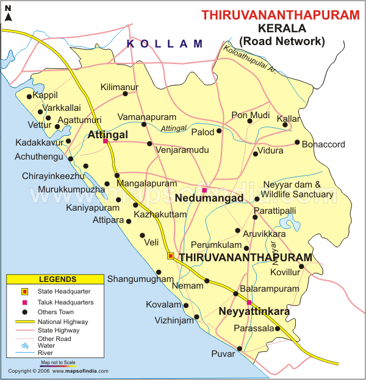
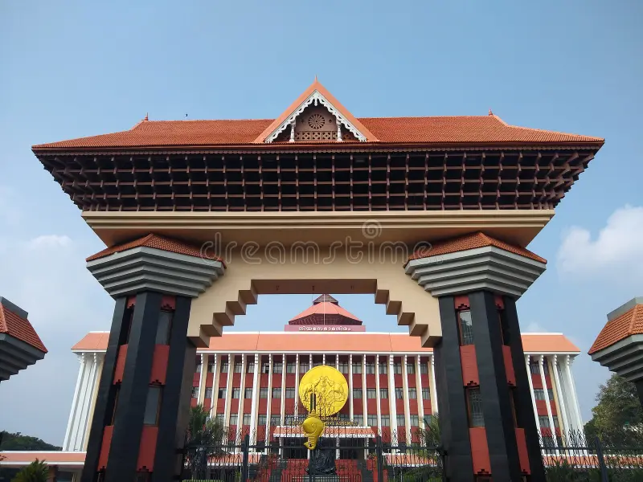
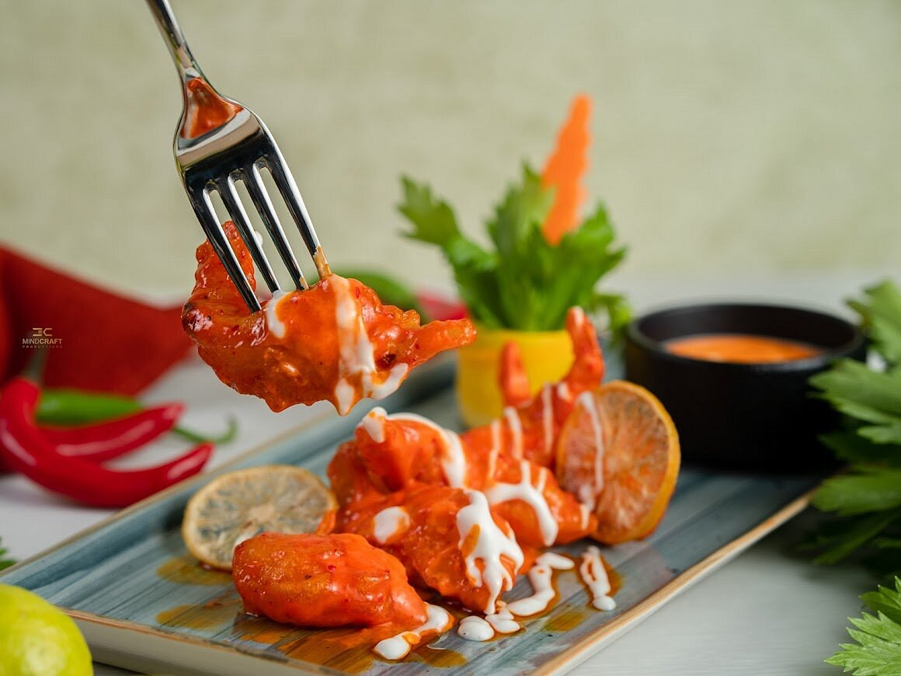
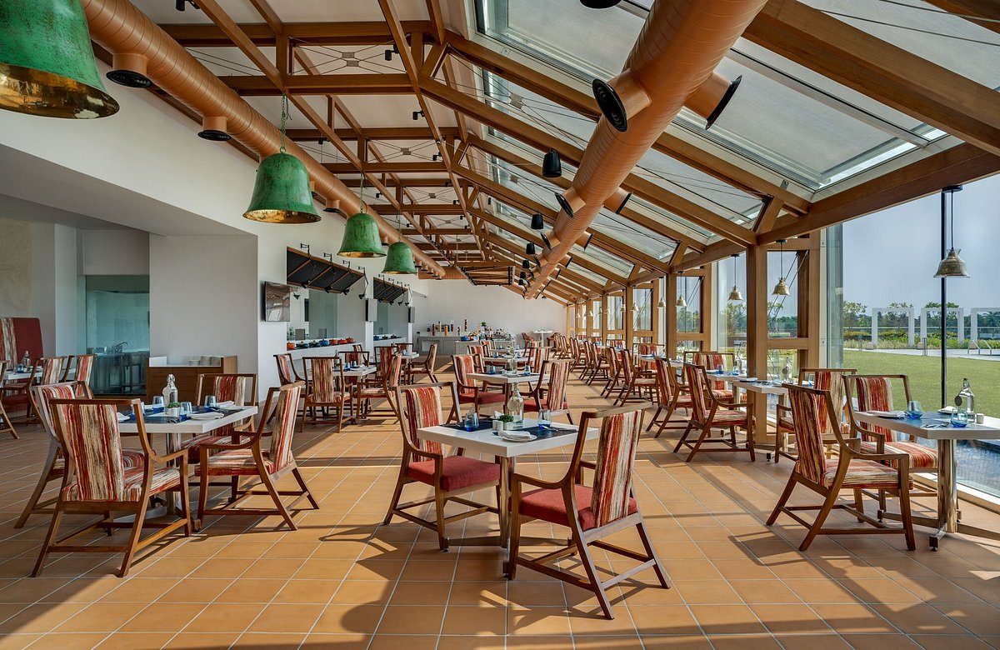
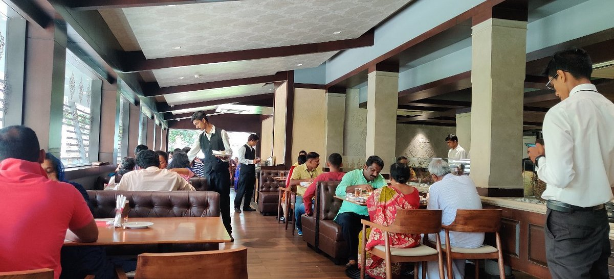
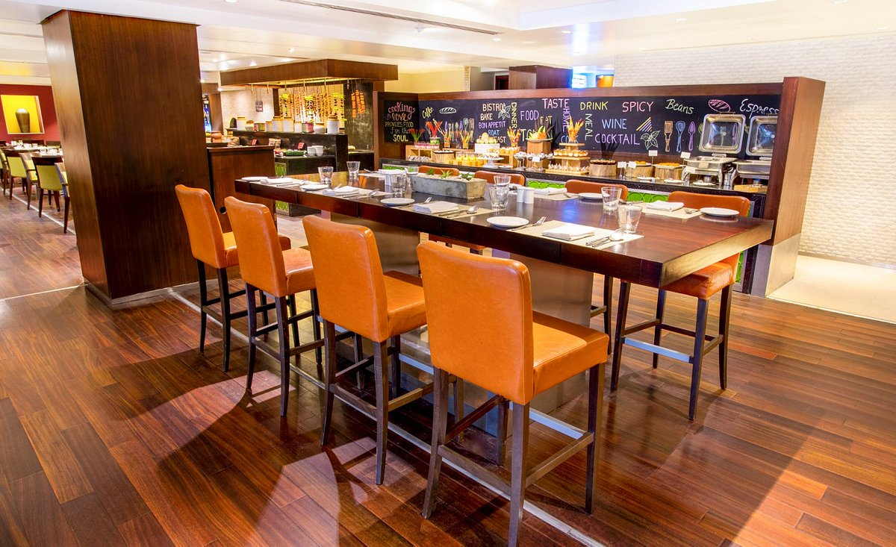

Welcome to Thiruvananthapuram
Explore the capital city of Kerala, known for its rich cultural heritage, beautiful beaches, and delicious food.
Image Gallery


Favorite Food Spots

BLND Restobar
BLND Restobar offers a blend of exquisite cuisine in a vibrant atmosphere.

O Café
O Café is known for its cozy ambiance and delicious coffee and snacks.

Paragon Restaurant
Paragon Restaurant is famous for its authentic Kerala cuisine and seafood dishes.

Garden Grille & Bar Restaurant
Garden Grille & Bar offers a fine dining experience with a variety of international cuisines.